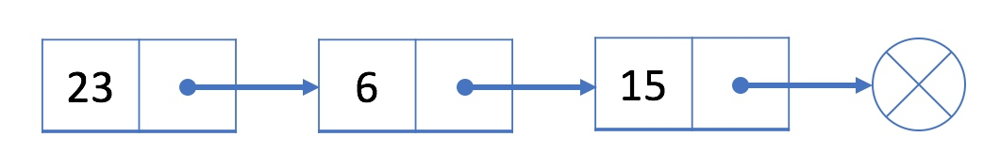
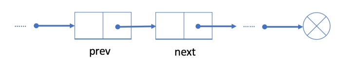
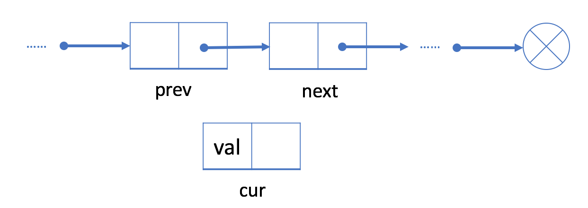
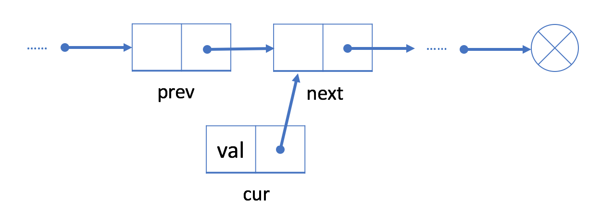
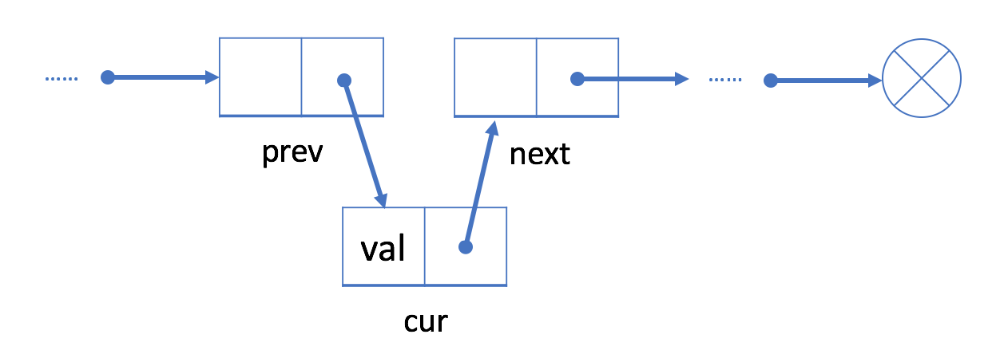
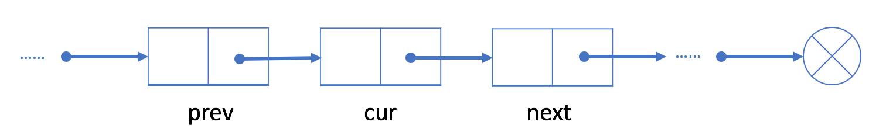
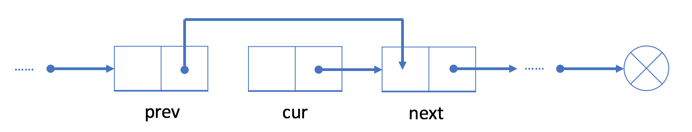

Implementation of Singly Linked List 单向链表的实现
定义
单项链表是有一系列节点串联起来的一种数据结构，每个节点包括一个数据值和一个指针，指针可以指向另一个节点。

跟数组不同，我们无法直接通过下标获取单向链表的第n项的值，我们只能一个接一个地遍历链表节点，并根据节点的next指针找到下一个节点，直到找到我们想要的节点。
举个例子，假设上图中值为 23 的节点是链表的头节点，如果我们想要获取值为 15 的节点，我们必须从头节点开始，通过next指针找到值为 6 的节点，再根据next指针找到值为 15 的节点。
操作
添加节点
已有一个单向链表如下图所示，

假设我们希望在prev和next节点中添加一个cur节点，我们需要进行以下操作：
初始化需要添加的cur节点，给节点敷一个值。

把cur节点的next指针指向prev节点的next指针所指的next节点。

把prev节点的next指针指向cur节点。

删除节点
已有一个单向链表如下图所示，

如果我们想要删除cur节点，我们需要进行以下操作：
找到cur节点的前一个节点prev和后一个节点next
把prev节点指向next节点

实现单向链表 SinglyList
1
2
3
4
5
6
7
8
9
10
11
12
13
14
15
16
17
18
19
20
21
22
23
24
25
26
27
28
29
30
31
32
33
34
35
36
37
38
39
40
41
42
43
44
45
46
47
48
49
50
51
52
53
54
55
56
57
58
59
60
61
62
63
64
65
66
67
68
69
70
71
72
73
74
75
76
77
78
79
80
81
82
83
84
85
86
87
88
89
90
91
92
93
94
95
96
97
98
99
100
101
102
103
104
105
106
107
108
109
110
111
112
113
114
115
116
117
118
119
120
121
122
123
124
125
126
127
128
129
130
131
132
133
134
135
136
|
const sampleNode = { val : 0, next : null };
const SinglyLinkedList = function() {
this.head = null;
this.length = 0;
};
SinglyLinkedList.prototype.get = function(index) {
if(index >= this.length){
return null;
}
let currentNode = this.head;
for(let i = 0; i < index; i++)
{
currentNode = currentNode.next;
}
return currentNode.val;
};
SinglyLinkedList.prototype.addAtHead = function(val) {
const newNode = { val, next : this.head };
this.head = newNode;
this.length++;
};
SinglyLinkedList.prototype.addAtTail = function(val) {
if(this.length === 0){
this.addAtHead(val);
return;
}
let currentNode = this.head;
while(currentNode.next){
currentNode = currentNode.next;
}
const newNode = {val};
currentNode.next = newNode;
this.length++;
};
SinglyLinkedList.prototype.addAtIndex = function(index, val) {
if(index > this.length){
return;
} else if(index === this.length){
this.addAtTail(val);
return;
} else if(index === 0){
this.addAtHead(val);
return;
}
let currentNode = this.head;
for(let i = 0; i < (index - 1); i++){
currentNode = currentNode.next;
}
const newNode = {val};
newNode.next = currentNode.next;
currentNode.next = newNode;
this.length++;
};
SinglyLinkedList.prototype.deleteAtIndex = function(index) {
if(index >= this.length){
return;
}
let currentNode = this.head;
for(let i = 0; i < (index-1); i++){
currentNode = currentNode.next;
}
currentNode.next = currentNode.next.next;
this.length--;
};
|